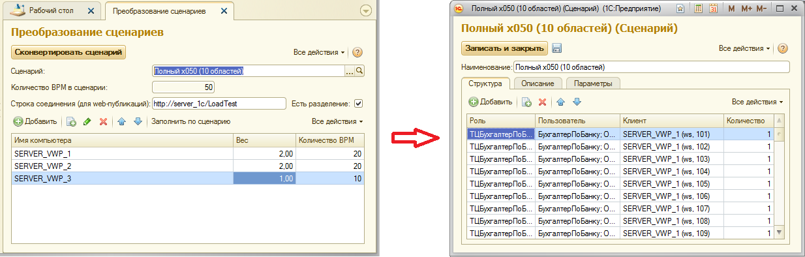

Обработка предназначена для облегчения процесса развертывания теста на нескольких серверах ВРМ, а также для упрощения миграции теста между тестовыми площадками.
Позволяет распределить виртуальных пользователей исходного сценария по произвольному количеству серверов ВРМ, а также заполнить строку подключения к базе, опубликованной на веб-сервере. При этом могут указываться как существующие, так и совершенно новые сервера ВРМ.

Порядок использования:
- Выбрать сценарий.
При этом автоматически заполнится общее количество ВРМ, указанное в сценарии (изменить из обработки этот параметр нельзя)
- Указать строку соединения с веб-сервером.
Этот параметр обязателен к заполнению в том случае, если тестовая база опубликована на веб-сервере. Если используется прямое подключение к серверу 1С, то оставьте этот параметр пустым.
- Указать признак разделения. В случае, если параметр указан, то последняя часть URL строки подключения из исходной настройки клиента считается адресом области, и будет перенесена в новую настройку.
Этот параметр необходимо указывать только в том случае, когда база опубликована на веб-сервере. В противном случае параметр игнорируется.
- Заполнить таблицу серверов ВРМ:
- Указать имя компьютера (строкой). Обратите внимание, что правильность заполнения имени сервера не проверяется.
- Указать вес сервера ВРМ.
- Виртуальные пользователи будут автоматически распределены между серверами ВРМ, в соответствии с заданными коэффициентами.
- Если необходимо взять за основу существующие настройки распределения ВРМ между серверами, то можно вспользоваться кнопкой Заполнить по сценарию.
Для этого:
- Выберите необходимый сценарий
- Нажмите кнопку Заполнить по сценарию. Список серверов ВРМ будет перезаполнен в соответствии с выбранным сценарием.
- Внесите необходимые изменения
- Если требуется перенести корректировки в другой сценарий, то выберите сценарий, который необходимо перезаполнить в соответствии с новыми настройками. Все изменения, сделанные в списке ВРМ при этом сохранятся, а количество ВРМ будет перераспределено в соответствии с количеством ВРМ в новом сценарии и весами серверов ВРМ.
- Нажмите кнопку Сконвертировать сценарий.
Состав сценария будет обновлен в соответствии с подготовленными настройками. При этом могут быть созданы новые элементы справочников Клиенты и Компьютеры.
Решение о создании элементов принимается в результате применения новых настроек к исходным настройкам клиентов, заданных в сценарии, и последущего поиска таких клиентов в ИБ. Если подходящие клиенты уже существуют, то будут использованы существующие элементы. В противном случае будут созданы новые элементы справочника.